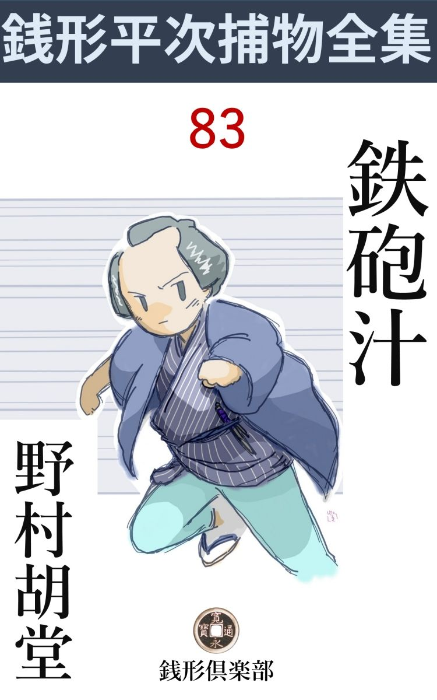
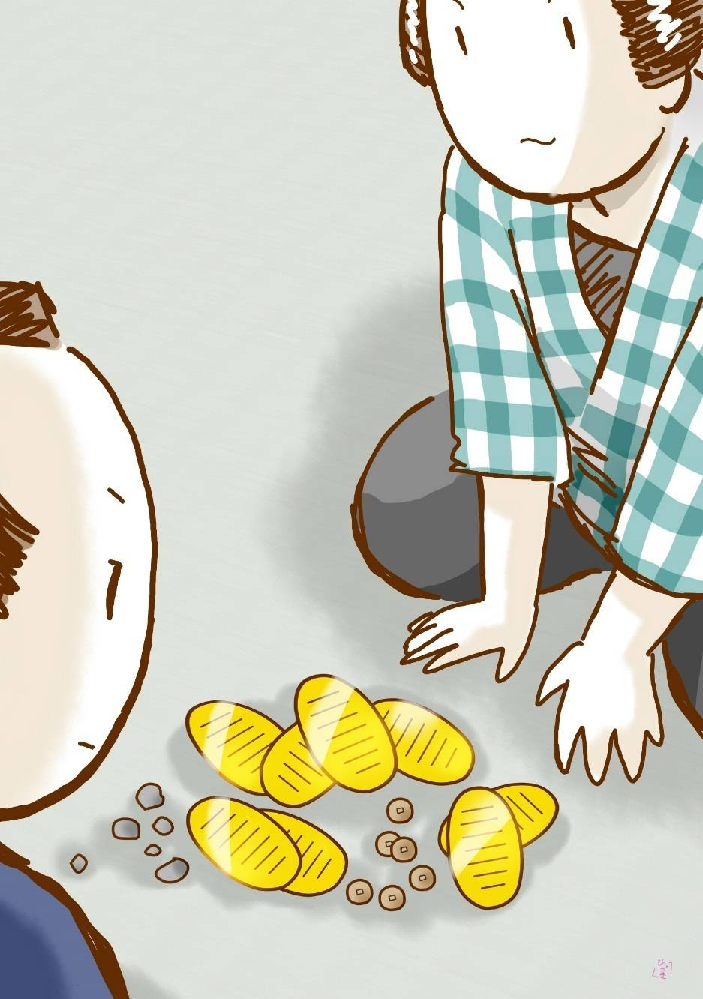

| 鉄砲汁: 銭形平次捕物全集第83話 (銭形倶楽部) | |
| 野村胡堂 | |
| ZENIGATA CLUB (2018) | |

一
「親分、近頃金の要るようなことはありませんか」
押詰ったある日、銭形平次のところヘノッソリとやって来たガラッ八の八五郎が、いきなり長い顎 を撫 でながら、こんなことを言うのです。
「何だと？ 八」
平次は自分の耳を疑うような調子で、長火鉢 に埋った顔をあげました。
「ヘッヘッ、ヘッヘッ、そう改まって訊かれると極りが悪いが、実はね、親分。思いも寄らぬ大金が転がり込んだんで」
「大きな事を言やがる。お上の御用を承 わる者が、手弄 などしちゃならねえと、あれほどやかましく言って居るじゃないか」
「博奕 なんかで儲けた金じゃありませんよ、飛んでもない」
ガラッ八は唇 を尖 らせて、大きく手を振りました。
「それじゃ、富籤 か、無尽か、------まさか拾ったんじゃあるまいな」
「そんな気のきかない金じゃありませんよ、全く商法で儲 けたんで」
「何？ 商法？ 手前 がかい」
「馬鹿にしちゃいけません、こう見えても算盤 の方は大したもので。ね、親分、安い地所でもありませんか、少し買って置いてもいいが------」
「馬鹿野郎、二朱や一分で江戸の地所が買えると思っているのか」
「二朱や一分なら、わざわざ親分の耳には入れませんよ。大 晦 日 が近いから、少しは親分も喜ばしてやりてえ------と」
「何だと？」
「怒っちゃいけませんよ、ね、親分。銭形の親分は交 りっけのねえ江戸っ子だ。不断は滅法威勢がいいが、宵 越 の銭を持ちつけねえ気 前 だから、暮が近くなると、カラだらしがねえ。さぞ今頃は青 息 吐 息 で------」
「止さねえか、八。言い当てられて向っ腹を立てるわけじゃねえが、人の面 をマジマジと見ながら、何てエ言い草だ」
平次も呆気 に取られて、腹を立てる張合いもありません。それほど、ガラッ八の調子は、ヌケヌケとして居りました。
「箱根じゃ穴のあいたのを用立てたが、今日のはピカリと来ますぜ。親分、この通り」
そう言いながらガラッ八は、内懐から抜いた野 暮 な財布を逆 にしごくと、中からゾロリと出たのは、小判が七八枚に、小粒、青銭取交ぜて一 と掴 みほど。
「野郎、何処からこれを持って来やがった」
平次は矢庭に中腰になると、長火鉢越しに、ガラッ八の胸 倉 をギューッと押えたのです。
「あ、親分、苦しい。手荒なことをしちゃいけねえ」
「何をッ、この野郎ッ。何処で盗んで来やがった、真っ直 ぐ白状しやがれッ」
平次の拳 には、半分冗談にしても、グイグイと力が入ります。
「盗んだは情けねえ、親分、こいつは間違いもなく商法で儲けた金ですよ」
ガラッ八は大袈裟 に後手を突いて、こう弁解をつづけました。
「岡っ引に商法があってたまるものか。盗んだんでなきゃ、何処から持って来た。さア言えッ」
「言うよ、言いますよ、------言わなくてどうするものですか、------おう痛てえ、喉仏 がピリピリするじゃありませんか」
「喉仏の二つや三つローズにしたって構うことはねえ。さア言え」
「驚いたなア、持ちつけねえ金を持つと、喉仏 に祟 るとは知らなかったよ」
「無駄はもう沢山だ。金を何処から出した、それを早くブチまけてしまえ」
平次が躍起 となるのも無理のないことでした。正直と馬鹿力を取得のガラッ八が、万々一、その頃の岡っ引の習慣 に引摺り込まれて、うっかり役得でも稼 ぐ気になったら、貧乏と片意地を売物にして来た、平次の顔は一ぺんに潰 れることでしょう。
「親分、心配するのも無理はねえが、これは筋の悪い金じゃありません。実は親分も知って居なさるあっしの赤鰯 を、望み手があって売ったんで」
「何？ 手前 の脇差を売った？」
「ヘエ------去年の暮、柳原の古道具屋を冷かし損 ねて買った、あの脇差が、十両になるとは思わなかったでしょう」
ガラッ八の鼻は蠢 めきます。
「手前が二分で買って、ひどく腐 って居たあの脇差が、十両になったというのか」
「その通りですよ、親分。あの脇差を見た人があって、恐ろしく錆 びて居る上に無 銘 だが、彦四郎貞 宗 に間違いはない、もし間違いだったら、俺の損 ということにして、現金十両で買うがどうだ、という話でさ」
「フーム」
「本当に貞宗だった日にゃ、十両で売っちゃ大変に損 だから、一日待って貰って、知り合いの刀屋を二三軒当って見ると、------飛んでもない、そいつは備 前 物 で、彦四郎でも藤四郎でもある筈はねえ。その上日本一の大なまくらだから、鍋 の尻を引っ掻くより外に役に立たない代物だ。望み手があるなら、拵 えごと一両で売っても大 儲 けだ------と言うんで、思い切って手離しましたよ、親分」
「呆 れ返った野郎だ。手前はその刀屋の鑑定 を、相手に言わなかったのか」
「言いましたよ。念入りに輪をかけて言ってやったが、相手は少しも驚かねえ------彦四郎貞宗でなきゃ、師匠の五郎入道正宗だろう。せっかく見込んだ品だから十両が二十両でも買って置きてえと斯 うだ」
「------」
「ね、親分。こんな正直な商法はないでしょう」
「------」
「生れて初めて入った十両の金だ。一人で費 っちゃ冥利 が悪いから、取りあえず親分に見て貰うつもりで持って来ましたよ。ね、何んかこう役に立てるような口はありませんか、親分、差当り払う当がなかったら、地所を買うとか、家を建てるとか------」
ガラッ八は悉 くいい心持でした。七八枚の小判を畳の上へ並べたり、重ねたり、チャリンと叩いて見たりするのです。

「止してくれ、俺はその音を聞くと虫が起きるよ」
「ヘッ、負 惜 みが強いね、親分」
「馬鹿な野郎だ。八両や十両で、江尸の真ん中に家が建つ気で居やがる」
「家なんか建たなくたって構やしませんよ。これだけありゃ大 福 餅 を買っても、ずいぶん出がありますぜ」
「呆れて物が言えねえ、------だがな、八。見す見す大ナマクラと知って、手前の脇差を十両で買うのは少し変じゃないか」
「変じゃありませんよ。気に入りゃ、跛馬 だって買いますよ」
「待ってくれ、------こいつは少し臭いぞ」
銭形平次はもういちど長火鉢に顏を埋めました。暮のやり繰 と違って、こいつは何うやら思案の仕 甲 斐 がありそうです。それを真似するともなく、八五郎も高々と腕を拱 きました。
畳の上に並べた七八枚の小判も、何となく引込みのつかない姿です。
二
「八、近頃何か変なことがありゃしなかったか」
平次は改めてこう訊きました。
「変な事？」
「例 えば、手前が嗅ぎ出した犯人 とか、腑 に落ちないと思った事とか------」
「ありませんよ」
「何かの証拠を握るとか------」
「なんにも握りゃしませんよ」
ガラッ八はあまりにも屈託 のない顔です。
「そんな筈はないが、------待てよ、その、手前から脇差を買ったのは誰だい」
「浜町の吉三郎、------遊び人で」
「吉三郎なら知っている。賭 事 もしない様子だが、妙に金廻りのいい野郎だ、------その吉三郎と何処で知合になった」
「髪結 床 で、------あっしとちょうど互先 という碁 ですよ」
「手前、浜町まで顔を剃 りに行くのかい」
「いえ、吉三郎の野郎が町内の錨床 まで来るんで、------あすこの親方の剃 刀 がたまらねえって」
「錨床の親方は、髷 はうまいが、剃刀は下手 じゃないか」
「あっしもそう思うんですがね」
「ところで、吉三郎は、何か手前に頼みはしなかったか」
「いいえ」
「少し変だな、八。脇差 を売った時、何か言った筈だと思うが------」
平次の問いは次第に核心 に触れて行きます。
「言いましたよ、あっし の煙草入れの根附 を見て、そいつは気に入ったから、脇差といっしょに譲 ってくれ------って」
「あの牙 彫 の------」
「どうせ浜町河岸で拾った品だから、脇差へおまけにつけましたよ」
「浜町で拾った？」
「ヘエ------」
ガラッ八の話は少し変って居ります。------『一と月ばかり前、夜 釣 に行った帰り、白々明けの浜町河岸に船を着けたことがありました。そのとき自分の船より一と足先に岸へ漕 ぎ寄せた伝馬が、炭俵と米俵を二十五六俵 陸 へ揚げて、サッサと大川を漕ぎ戻ったのを見ていると、足元の石垣の上に、牙 彫 の円いものが一つ、危うく水に落ちそうに引っ掛って居た』------というのです。
拾って見ると。ちょうど手頃な根附で、真中に穴まであいて居りますが、彫刻 は怪奇を極めて、唐 草 模 樣 と鬼のような縮 っ毛 の人間の首と、それから得体の知れない髯 文 字 がベタ一面に彫 ってあったのを、暢気 なガラッ八は、自分の煙草入れに附けて、そのまま腰に挾 んで歩いて居たのでした。
「何だ、拾ったものをそのまま腰ヘブラ下げて居たのかい」
平次も少し呆 れましたが、今に始めぬガラッ八の暢気 さが、腹を立てるにしても、少し馬鹿馬鹿しかったのです。
「どうせ馬の骨か牛の骨に細工をしたものですよ。吉三郎は三拝九拝して持って行ったが、あんなものが何かになりますか、親分」
「呆れた野郎だ」
平次は誰へともなくこう言いました。
「こんな事が商法になるなら、江戸中の古道具屋を漁 って、安物の脇差をうんと買い集めようかと思うが、どんなもので」
「いい加減にしないか、八。吉三郎の狙ったのは、赤鰯 じゃなくて牙 彫 の根附だったかも知れないな------とにかく、十両の金を持って行って、脇差と根附けを買い戻して来るがいい」
「三日も前のことですよ、親分」
「三日前だって、三年前だっていいじゃないか」
「十両の金が、三日もあっし の手に無事で居るわけはないじゃありませんか」
「仕様のねえ野郎だ、いくら費 ったんだ」
「店賃 と米屋酒屋の払いと、煙草を一つと大福餅を十六文買って、一両二分と六十八文」
「いやに刻 みやがったな、------お静、一両二分と六十八文、お前のところにないか」
平次はお勝手の方へ声を掛けます。
「お前さん、------そんな事を言ったって」
お静の声は口の中に消えました。差 迫 る大 晦日 を控 えてここも大世話場の真最中だったのです。
「気のきかねえ事を言うな、何のために質屋 が暖簾 を掛けて置くんだ。俺の着 換 をそっくり持って行きゃ------」
「でも、あと三日で年始 廻 りじゃありませんか」
「この正月は風邪 を引くことにするよ」
「------」
お静は黙って出て行った様子でした。
「済まねえ、親分」
ガラッ八は萎 れ返って、平手で額を叩いて居ります。
「こいつは罠 だったのさ、八。これからも気をつけることだ、------なアに、お静のことなんか心配することがあるものか、こちとらの女房は、貧乏や十手には馴れっこだよ」
平次はそう言ってカラカラと笑うのでした。
三
「た、大変だ、親分」
「また大変の大安売が来やがった、------何だい、八」
十両に纒 めた金を握って、浜町の吉三郎のところへ駆けて行った筈の八五郎が、半 刻 も経たないうちに、面食 った旋風 のように舞い戻って来たのでした。
「こいつは驚くぜ、親分。吉三郎がゆうべ死んだんで」
「何？」
平次もさすがに立ち上がりました。
「下手人は鉄砲 汁 さ」
「河豚 の毒にやられたのか」
大きな失望が、平次の顔をサッと翳 らせます。
「友達が三人で河豚鍋を突っつきながら、一杯やらかしているまではよかったが、その晩吉三郎が毒に中って、七転八倒の苦しみ、夜明け前に息を引取ったということですよ」
「あとの二人は何うした」
「無事だったそうで」
「誰と誰だ」
「そいつは聞かなかった」
「行ってみよう、八。どうも俺には腑 に落ちない事だらけだ」
平次は帯を締め直して、草履 を突っかけました。
「河豚で死んだと解っても------ですかい、親分」
「河豚だっていろいろあるよ。後学のためだ、一緒に来るがいい」
二人はそのまま、浜町の吉三郎の家へ飛んだことは言う迄もありません。
吉三郎の派手な生活 に似ず、家は至って地味で、贅沢ではあるが、何となく粋 好 みでした。附合いがあまりなかったものか、集まって居るのは、ほんの近所の人達が二三人。それも平次とガラッ八の姿を見ると、妙に掛り合いを惧 れるように、コソコソと姿を隠してしまいます。
「飛んだことだったな、お神さん」
「ま、銭形の親分さん。飛んだことになってしまいました」
女房のお由。二十五六の良い年増が、顔を挙げることさえ出来ない様子で、逆 さ屏風 の中に泣き崩 れて居るのでした。
「ゆうべの客は誰と誰だい」
平次は形ばかりの線香をあげてから、こう静かに訊きました。
「それが、よく、わかりません」
「はて？」
「ちょいちょい見かけるお顔ですが------」
「年の頃は」
「二十七八と五十二三」
「河豚 は何処から買ったんだ」
「年を取った方のお客が持って来ました。竹の皮包みにして、------今日漁 ったばかりのを、知合からわけて貰って来たが、よく洗ってあるから大丈夫だ------と言って」
「確かに三人で食ったのだね」
「それはもう間違いもありません、大層おいしいから、私にも是非とすすめましたが、私は河 豚 と雲 丹 は我慢にもいけません」
「二人の客が帰ってから、毒が利 き始めたのか」
「え」
「河豚の残りがあるだろう、生 でも煮 たのでも構わねえ、チョイと見せて貰おうか」
平次は妙に執拗 に突っ込みます。
「それが、その残ったのを、皆んな竹の皮に包んで持って行ってしまいました」
「吉三郎は河豚をちょいちょいやるのかい」
「いえ、生れて初めてだそうで、ひどく嫌がって居りましたが、二人に笑われて我慢に食べたようです。でも、一と箸 二た箸食い始めると、------こりゃ飛んだうまいや、鮟 鱇 そっくりだ------そんな事を言ってました」
「鮟鱇そっくりと言ったのかい」
「それから酒の味がどうも変だ、舌のせいかしらとも言っていました」
女房のお由は進まない様子ながら、問わるるままに説明しました。
「三人で一つ鍋 を突っついたのだろうな」
「え、それなのに、中 ったのが一人は情けないじゃありませんか」
「二人が無事とどうしてわかった」
「何処で噂を聞いたか、今朝お二人はあわてて飛んで来ました。御近所の衆も御存じですが、何か宿が預かったものがあるとか言って、仏樣の懐までかき廻して行きましたが------」
「それが見付かったのかい」
「そこまでは解りません」
話が次第にこんがらかって、そして微妙になって行きます。
「おや？ この脇差ですよ、親分」
ガラッ八は死骸の枕元に置いてあった、魔 除 けの脇差を取上げました。言うまでもなく三日前にガラッ八が吉三郎に売った、十両の赤鰯丸 です。
「そいつには大した用事がなかったんだよ。ところでお神さん、毒は何刻 ほど経って利き始めたんだ」
「鍋が空になると、二人のお客はすぐ帰りました。それを送って出ると、上り框 で引ッくり返った切り------」
「やはり身体が痺 れたんだね」
お由の声が涙に途切れるのを、平次は慰め顔に言うのでした。
「いえ、痺れもどうもしません。急に腹の中へ火が付いたようだと言って、目も当てられない苦しみをしましたが、とうとう黒血を吐 いて夜明け前に息を引取りました」
「医者は？」
「町内の玄 道 さんに診 てもらいましたが。何の役にも立ちません」
お由はこれだけ言うのが精いっぱいでした。平次の問いが途切れると、吉三郎の死骸に獅 噛 みつくように、時々は声を立てて泣いて居ります。
四
「親分、河豚 汁 じゃ十手捕縄にも及ばないじゃありませんか」
吉三郎の家を出ると、ガラッ八はもう天下泰平 の顔になっているのでした。
「手前はそう思うのか」
「だって親分」
「だから幾年経っても、大物は挙 がらねえのさ」
銭形平次は八五郎の鈍 骨 を愍 むともなく、こう言うのでした。
「ヘエ------、すると、何か変なことでもあるんで？」
「その辺に居る町内の人達に、今朝吉三郎の家へ来た、二人連れの人相を訊くがいい。その辺が手 繰 りどころだ」
「ヘエ------」
ガラッ八は吉三郎の家の裏口へ廻りましたが、やがて、狐につままれたような顏をして戻って来ました。
「どうした、八？」
「変ですぜ、親分。今朝ここへやって来て、仏様の懐までかき廻して行ったのは、三十前後の凄 い年増と、四十恰好の浪人者らしい男だそうですよ」
「それ見るがいい」
「吉三郎夫妻とは余っ程昵懇 の様子で、時々この家へ来るそうですよ」
「所、名前は？」
「そいつは解らねえ、------お由を締め上げてみましょうか」
「無駄だよ、止すがいい。それに亭主の死骸の側で手荒なことをしちゃ、いかに御用でも寝 醒 めがよくねえ」
「親分は相変らず弱気だ」
「それでいいのさ、気が強くて考えが浅かった日にゃ、岡っ引は罪ばかり作るよ」
平次はそんな事を言いながら、町内の本道、町野玄道を訪 ねました。
吉三郎毒死の顚 末 を細々 と訊くと、
「親分、あれはどうも腑 に落ちないよ、河豚 の毒ばかりではなかったようだ」
「すると、何か外の毒でも盛られた様子で？」
「いや、そう言うわけじゃない。第一あんな激しい毒薬は、江戸中の生 薬屋 を捜したってない、------南 蠻 物 なら知らないが------」
「南蠻物？」
「やはり河豚にして置く外はあるまい。三人で食って一人しか中 らないというのは、河豚の外にはないことだ。鍋 の中に外の毒が入っていたなら、三人が三人ともやられる筈だ」
玄道は大きな坊主頭を振るばかりです。
平次とガラッ八はもう一度吉三郎の家へ戻りました。が、お由はもう白い眼を見せるだけで、二人の問いにもろくに答えてはくれず、親類緑者も、友達もない様子で、話を手ぐり出す工夫もありません。
「お神さん、もう一つ二つ訊きたいが、お前さんところの宗旨 は何だえ」
平次はつかぬ事をきくのでした。
「門徒 ですよ、今お寺様が来ますから、お宗旨の事ならそっちへ訊いて下さい」
少し剣もほろろです。
「江戸には親類もないんだね」
「あったって遠い身寄は音信不通で、附合っちゃくれません。尤も長崎には亭 主 の弟が居ますが、お葬 式 に間に合うわけはなし」
「そいつは気の毒だ」
そんな事を言いながら、家の中を念入りに見ましたが、ひどく裕 福 らしいという外には、何の変ったところもなかったのです。
「吉三郎は遊び人で通っていたが、勝負事は好きじゃなかったそうだ。立入ったことを訊くが、世過ぎは何でやって居たんだ」
平次の問いはかなり突っ込みます。が、
「私にも解りませんよ。金の成る木でも持って居たんでしょう」
お由は空嘯 いて相手にしそうもありません。
「もう一つ、三日前に八五郎が、この脇差と牙 彫 の根附 を一つ、十両で吉三郎に売ったそうだ。少しわけがあって、それを返して貰いたいんだが」
平次は十両の金をお由の前に押しやって、相手の出ようを待ちました。
「勝手にその脇差を持って行って下さい。尤 も牙彫の根附なんかは知りませんよ」
「確かに持っていた筈だが------」
「親分も、仏樣の懐が見たいんでしょう。勝手にするがいい、馬鹿馬鹿しい」
お由は気が立って居るらしく、こう言ってプイと座を立ちました。
「見ましょうか、親分」
立ちかかる八五郎。
「無駄だろう、今朝抜かれてしまったよ、------赤鰯丸 なんか持って行っても仕様があるまい、------十両の金さえ返しゃ気が済む。さア帰ろうか、八」
平次はもう何の未練 気 もなく立ち上がるのでした。
五
その日半日、平次はどこともなく飛んで行ってしまいました。ガラッ八は吉三郎の家を宵まで見張りましたが、町内の百万 遍 の講中が来たのと、お通 夜 の小坊主が、お義理だけの経 をあげた外には、何の変りもありません。
フラりと平次の家へ来たのは亥 刻 少し過ぎ、食わず飲まずで見張っていてひどく疲 れて居ります。
「親分は？」
「まだ戻りませんよ。入って待っていて下さいな、八さん」
お静 の蟠 りない調子に、八五郎はいつものようにヌッと入って長火鉢の前に頬 杖 を突きました。
「何処へ廻ったろうなア」
「お支度は、八さん」
お静はそれに構わず、腹の減っているらしい八五郎の顔を、少し遠くから鑑 定 しております。
「親分が帰ってから御馳走になりましょう」
ガラッ八にも矢張り遠慮はあったのです。
「それじゃ、せめて一本燗 けましょう」
「ヘエ、------変なことがあったもので------」
「まア、八さん、たまにはお酒くらいはありますよ。------ツイ先刻、八丁堀の旦那から、心祝いがあるからと、わざわざ一升届けて下さいましたよ」
「そいつは豪儀だ、------さすがに笹野の旦那は気が付くぜ、ヘッ、 ヘッ」
八五郎はすっかり相好を崩 してしまいます。
お静はその間に、銅壺 に突っ込んだ徳利を拭いて、八五郎の前に据 えた膳の上へ、そっと載 せてやりました。元は水茶屋に奉公していたお静ですが、さすがに夫の留守に、子分の酒の酌 までしてやるのを憚 かったのでしょう。
「済みません」
「なアに、此方が勝手なんで、有難てえな。卜、卜、卜、散ります散りますと来やがる。ヘッ、ヘッ、良い色をしているぜ」
グッと喉 を鳴らしながら、猪口 の手を胸のあたりまで持って行った八五郎。
「待ちな、八」
ガラリと格子が開きました。銭形平次が帰って来たのです。盃 を膳へおくかと思った八五郎の手は、意地汚くそのまま唇 ヘ------。
「あッ」
八五郎の手をハタと打ったものがあります。盃は後ろに飛んで、パッと胸から膝へ飛散る酒。平次の煙草 入 が飛んで来たのでした。
「親分」
八五郎の声にも怒 があります。
「馬鹿ッ、そいつを呑 むと命がねえぞ」
「えッ」
「今路地の外まで帰 って来ると、変な野郎がウロウロして居るから、様子を見ているうちに、お静の話を聞いてしまったよ、------八丁堀の旦那が、心祝いに酒を下すったなんて、そいつは大 嘘 だ。俺はつい先刻まで、八丁堀に居たんだから、お酒を下さるなら、そんなお話の出ないわけはねえ。心祝いどころか、笹野の旦那は明日は先代様の法 要 で、牛込のお寺まで行かなきゃならないと言って居なすったよ」
そう言いながら平次は、埃 も叩かずに入り込んで、黙ったままお静の差出す樽 を受取って眺めました。
「親分、そ、そいつは本当ですかえ」
「嘘だった日にゃ、俺は八に申訳がねえことになる。これを見るがいい、樽は町内の酒屋のだ。八丁堀から屆いたのではない証拠は、この 〼 定 の印 で判るだろう」
「------」
八五郎もそう言われると、口もきけません。
「危いところだ。八、そいつを一 と猪口 呑んだだけで、手前 は俺の身代りに、血へどを吐 いて死ぬところよ」
「------」
「だが、癪 にさわる野郎じゃないか。この平次を鰌 と間違えやがって」
「誰がこんな事をしたんで、親分」
八五郎はようやく人心地がつきました。
「吉三郎を殺した奴だよ」
「じゃ河豚 ？」
「馬鹿、河豚が酒を買って、届けるかよ」
「さア解らねえ」
「俺も解らねえが、こいつは大変な曲者だ。退治しなきゃ御府内の難儀、お上の御 威 光 にも拘 わる。来い、八。今晩のうちに埒 をあけてやる」
「ヘエ------」
八五郎は平次の剣幕に釣られて、モソモソ立上がりました。
「お静、その酒は匂いを嗅 いでもならねえよ。封印をして大事にしまって置 け」
「ハイ」
言い捨てた平次。その足で駆け付けたのは、町内の酒屋升 定 でした。番頭に訊くと、
「いい年増でしたよ。一番良いのを一升量 らせて、小僧に持たせてやりましょうと言うと、イヤ、それには及ばない、私が持って行かなきゃ、親切が届かないって」
「その女は三十前後の------」
「大 店 の御新造といった風でした。頭巾を冠 って居るので、髪形はわかりませんが」 。
「有難う、飛んだ手数だった」
平次は外へ出ると、真っ暗な師走 の空を仰いで、大きく息をしました。見えざる敵のしたたかさを改めて犇々 と感じた様子です。
六
「お神さん、そいつは間違いだぜ。吉三郎は河 豚 で死んだんじゃねえ、立派に毒 害 されたんだ」
通夜の人数を追っ払って、八五郎に見張らせた平次は、吉三郎の死骸を中に、お由と膝詰め談判を始めたのでした。
「まさか、親分」
お由は容易 に信じそうもありません。
「証拠はいくらでもある。第一、昨夜三人で食ったのは、河 豚 じゃない鮟 鱇 鍋 だ、吉三郎が河豚を食ったことがないと言うから、鮟鱇を持って来て、河豚ということにして食わせたんだ。鮟鱇鍋で死ぬ気遣いはないが、河豚なら随分三人のうち一人死ぬということがないではない------、彼奴らは其処を狙ったんだ」
「------」
「残った魚を竹の皮包にして持って帰ったのは、後で鮟 鱇 と判っては面白くないからだ。それから、河豚の毒なら身体が痺 れる筈だが、そんな事がなくて、腹の中が焼け爛 れるようで、血を吐いたのは南 蠻 渡 りの毒薬に違いない。玄道さんもそう言っている」
「------」
「毒は、吉三郎の盃の中に入って居たんだ。多分、ちょいと立った時か何か、投げ込まれたんだろう。------その証拠は、昨夜は三人共、盃のやり取りはしなかった筈だ」
「えッ、そ、その通りですよ。親分。いつも差したり差されたりするのが、ゆうべは最初から御家人喜六の言い出しで、盃のやり取りなし、うん と食って飲もうということにしたようでした」
「それ見るがいい。お前の配偶 は、その御家人喜六と、もう一人の年増に殺されたんだ。今夜は俺のところへまで毒酒を持込みやがったよ。放 っておくと何をやり出すか解らない」
「えッ」
「解ったか、お神さん。夫の敵を討つ気はないのか」
「畜生ッ、そうとは知らずに、------私は亭 主 に口止めされたのを守って、今まであの二人を庇 ってばかりいました、------敵を討って下さい。親分さん」
お由にも、ようやく事件の全貌 が解った様子です。
「それにしても相手の素姓 が解らなくちゃ、敵の討ちようがない。あの女は何だい」
「唐人 お勇という大変な女ですよ」
「三人で何かやって居た筈だが------」
「何か大仕事をしているようでしたが、私には言ってくれません」
お由は全く何にも知らない様子でした。
「仲間はたった三人切りか」
「子分は二三十人ある筈です」
「ね、お神さん。仏様のことを悪く言うわけじゃないが、吉三郎はその御家人喜六と唐人お男に荷 担 して大変なことをやって居たんだ」
「------」
「俺の見当では、多分抜荷を扱 って居たのだと思う、------抜荷というと何でもないようだが、こいつは大変な御法度で、露 顕 すると獄門にも磔 刑 にもなる」
「------」
「自分の栄華のために、紅 毛 人 に御国の宝 をやって、厄体もない贅沢な品物を買入れ、それを三倍五倍の利潤 で、金持や物好きな人間に売り付けるのだから、抜荷扱いは商人の風上にも置けねえ、屑 のような人間だ」
「------」
「お国の宝の大判 小判 、あれを紅毛人は命がけで欲しがるそうだ。だから、命知らずの紅毛人は、羅 紗 だの、ビードロだの、いろいろの小間物だの、あまり生活の足しにならぬ物を持込んで、この国の大判小判と換 えて行くのだ。長崎ではお役人の目がやかましいから、九州の沖で日本の船に積 換 え、米や炭の荷に交ぜて、公方様お膝元へ持って来るに違いない。江戸へは諸国の荷が集まるから却 ってわからない道理だ、------現にお前の夫の吉三郎を殺したのも、その抜 荷 で入った南 蠻 秘 法 の毒薬だ」
平次の舌は焔 のように燃えます。
「親分さん」
「私欲のために掟 を破り、その上、人まで殺すような悪者は放っては置けない。お前の知ってることがあったら皆な言ってくれ、許しておけない奴らだ」
「親分さん、皆んな申上げます」
「それは良い心掛だ。夫の罪亡ぼしにもなるだろう」
「仏は何んにも知りません、------でも、船の入る時の合図 だけは知っています。------ときどき見張りをさせられましたから」
「有難い、それが解りゃ」
「------」
お由は声を潜 めました。
七
その晩神田の平次の家は焼けたのです。
こればかりは、銭形平次も気が付かなかったのでしょう。毒酒の計略 は見事に見破りましたが、それだけで油断をしていると、その夜の丑 刻 半頃、三方からあがった火の手は、瞬 く間に平次の長屋を焼き落し、近所の二三軒を半焼にして、ようやく納まったのでした。
風がないのと、暮の街で注意が行届いたので、これ丈 けで済んだのは不幸中の幸いでしたが、困ったことは、肝心 の銭形平次が、それっ切り行方不知 になってしまったことです。
------銭形の親分が焼け死んだとよ------
------表裏の戸口は外から閉めてあったそうだ、お静さんが命からがら逃げ出したというぜ------
そんな噂が八方から飛びました。全く、焼跡 にションボリと立っている、気の抜けたようなガラッ八の姿や、顔から腕へかけて、晒木綿 で巻かれた、痛々しいお静の様子を見ると、銭形平次が死んだというのも、満更の噂 ばかりではない様子です。
昼頃には八丁堀の与力笹野新三郎も来ました。江戸中の顔の良い御用聞も、五人十人と集まって来て、夕方には、それが二三十人になり、打ち湿 った様子で、ポッポと烟 る灰を掻かせて居ります。
日が暮れると、平次の遺骸を板 囲 いの中から運び出し戸板に載 せて、回 向 院 に移しました。江戸中の名ある御用聞手先が二三十人、笹野新三郎と一緒に、それに従 ったことは言う迄もありません。
その晩の戌刻 半頃、この一行は回向院の寺内に入り、そこでお通夜が営まれたのです。
同じ夜、子刻 過ぎ、永代のあたりから漕ぎ上がった伝馬が一艘 、浜町河岸に来ると、船頭が舳 の灯を外して、十文字に二度、三度と振りました。
師走二十九日、漆 のような闇の中に、その光が水を渡って走ると、何処からともなく河岸に集まった人数がざっと二十人ばかり。
「変な時船が入ったものだね、お首領 」
「宵のうちに、永代から合図があってびっくりしたよ、------今ごろ入る船はない筈だが、春になってから来るというのが、何かの都合で早く入ったんだろう」
そう言った囁きが、彼方、此方に交 されます。
「それよ、板を渡してくれ」
「おい」
「酒の荷が先か米の荷が先か」
「明日は大 晦日 だ、酒の荷を先にしてくれ。三河屋も、長崎屋も来て居るぞ」
いつの間にやら、屋号を入れた提灯が二つ三つ用意されました。屈強 な若者達が、船から運び出す荷を、陸 に待って居る人足が、言葉少なに受取って、何処ともなく姿を消します。
船の中の荷物はザッと二十七八。その全部を運び終ると、後に残ったのは、頭 巾 を目深に冠 った男と女の二人でした。
「これでよし、帰ろうか」
「帰りましょう」
歩みを移 す二人の前へ------、
「御用ッ」
ヌッと突っ立ったのは八五郎のガラッ八です。
「何？」
「御家人喜六、唐人お勇、神妙にせい」
パッと組付いて行くガラッ八、お勇は身をかわして、トンと肩のあたりを突きました。
「ワッ」
二三歩泳いで立直るガラッ八。その後ろから、
「えいッ」
御家人喜六の一刀が闇を劈 くのを、
「俺が相手だ、来いッ」
横合から飛込んだ十手が、ガッキと受止めました。
「邪魔だッ」
「抜 荷 の悪事、吉三郎殺しの下手人 まで露顕 したぞ。観念せいッ」
「何をッ」
御家人喜六は、お勇を後に庇 って、一刀を闇に構えます。
「御用ッ、御用ッ」
八方から、ヒタヒタと詰めよる捕方の人数。
「えッ、寄るな寄るな、一人残らず切って捨てるぞッ」
御家人喜六の腕は抜群 でした。
「伝馬は此方で仕立てた偽物 だ、仲間は一人残らず生捕られたぞ。神妙にお縄を頂戴せい」
先刻、船から揚げた荷物を、一つ一つ担 いで行った子分は、回向院に通 夜 をすると見せかけた、江戸中の手先に、一人残らず後を跟 けられ、落着く先で縛られたとは、御家人喜六もまだ知らなかったでしょう。
「えッ、其方どもに縛 られる喜六ではない、退け退け」
サッと身を翻 すと、眼にも止まらぬ早業で、早くも二三人の捕方は浅 傷 を負わされた様子。
「油断するなッ」
後ろから激励の声を掛けたのは笹野新三郎です。
「灯 だッ」
誰やらの声に応じて、どこに隠してあったか、十幾つの御用の提灯が、一度にパッと二人の曲者を照します。
「あっしが行きましょう。この野郎には家を焼かれた怨 があります」
パッと飛出した美丈夫。
「平次だ、平次だ」
捕物陣は二つに割れて、その道を開きました。
「生きていたのか平次、命冥加 な奴だ」
苦 りする御家人喜六、右手の刃 は、油断なく灯にギラリとうねります。
「手前のすることは一々卑怯 だ、我慢のならねえ野郎だ」
そう言う口を塞 ぐように、喜六の刃はサッと伸びます。
「おっと危ねえ、------これでも食やがれ」
平次の右手が挙 がると、夜風を剪 って銭が一枚、御家人喜六の唇 へ------。
「己れッ」
僅かに刃の平で受けましたが、二枚目は強 かに頬骨へ、三枚目は額へ、------眼ヘ------。
「野郎ッ」
ひるむ後ろから、無手 とガラッ八が組付いて居たのです。
「危ねえ、八」
銭形平次はおどろいて飛込みました。喜六の後にいる唐人お勇は、匕 首 を抜いて、ガラッ八の脇腹ヘサッと突いて出たのです。
平次は危うくそれを突飛ばすと、お勇の匕首は飛龍 の如く平次の胸へ飛んで来たのでした。それをかわして、
「女、いい加減にしろッ」
飛付く平次。その手を払ってお勇の身体は、大川の寒水へ、水音高く飛込んでしまいました。
× ×
「変な捕物だったね、親分」
その帰り路、柳原土手でガラッ八はこう誘 いかけました。
「脇差を十両に売ったのが始まりさ。手前 が感のいい人間で、吉三郎の心持を読むと、こいつは危ないことだったよ」
平次は面白そうです。
「ヘエ------」
「まだ判らねえのか、------手前に抜荷 を揚げる現場を見られたから、大なまくら を十両で買ってな、手前 の御機嫌を取ったのさ、------見て見ぬ振りをしてくれという謎さ」
「なアーる」
「今ごろ感心する奴があるものか、十両の元手をただ取られたようなものだ」
「へエ------」
「あの牙 彫 の根 附 は、多分抜荷を受取る手形のようなものだろう。吉三郎は仲間では三 下 だが、あの牙彫の手形を手前のところから見付けて持って行くと、急に頭領 の株を狙って、抜荷の大 儲 けを一人占めにしようという大望を起したのさ」
「------」
「それと気の付いた御家人喜六と唐人お勇が、吉三郎如きに大事の手形を取られちゃ叶 わないから、鮟 鱇 を河 豚 と言って食わせ、実は毒酒で殺して死骸から牙 彫 の手形を抜いたのだよ」
「そう絵解きをして貰うと、そうでなかったら嘘見たいで、へエ------」
ガラッ八はまだ長い顎 を撫でて居ります。
「だが、自分達の利潤 のために、お上の御法を破る奴は憎いね。その上仲間を殺したり、------俺の家まで焼いたり」
「そう言えば、親分は何処へ行きなさるつもりで------」
「お静は当分里のお袋に預けたよ、------俺はな、八。当分、八五郎の家に居候 ときめたよ」
「そいつは有難てえ。親分を居候においたとあれば、あっし も肩身が広い」
「ハッハッハッ、ハッハッ」
柳原土手の夜は白みかけて居りました。大晦日 の江戸の街は、一瞬転 毎 に、幾百人かずつ最後の足掻きの坩 堝 の中に、眼を覚 さして行くのでしょう。
（編注）
作品中には、身体の障害や人権にかかわる、差別的な語句や表現が見られますが、本書が成立した当時の時代背景等が現代とは異なる古典的な文学作品でもあり、著者が故人でもありますので、底本のままとしました。ご理解、ご諒承のほどをお願い申し上げます。
著者---野村胡堂
挿絵---萩 柚月 © 2017
初出---「オール讀物」昭和十三年十二月号 文藝春秋社
底本---「錢形平次捕物全集」第四巻 河出書房 昭和三十一年六月三十日初版
編集・発行 銭形倶楽部